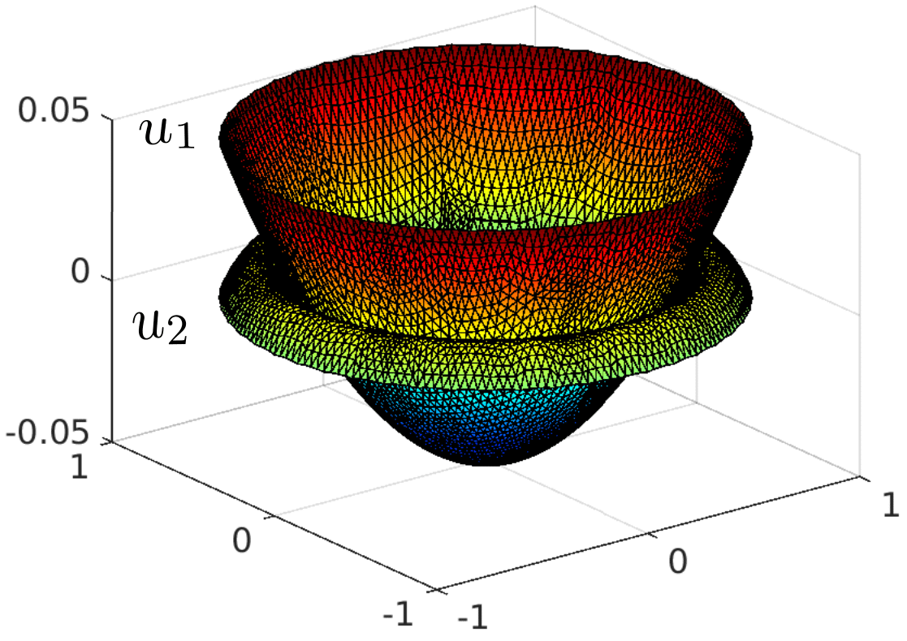
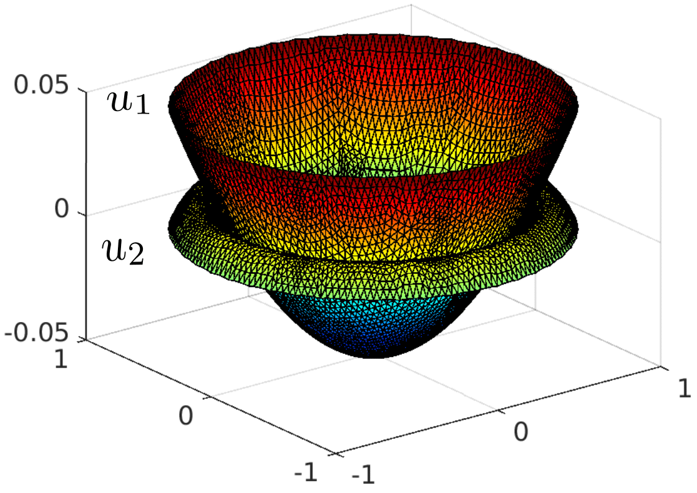

Some results on cross-diffusion systems
`{:
( ,-mu_(1) Delta u_(1) - lambda = f_(1) ) ,
( ,-mu_(2) Delta u_(2) + lambda = f_(2) ) ,
( ,u_(1) - u_(2) >= 0, lambda >= 0, (u_(1) - u_(2)) lambda = 0 ) ,
( ,u_(1) = g_(1) ),
(,u_(2) = g_(2)),
:}`
$$
\begin{align}
& -mu_(1) Delta u_(1) - lambda = f_(1) \\ \\
& -mu_(2) Delta u_(2) + lambda = f_(2) \\ \\
& u_(1) - u_(2) >= 0, lambda >= 0, (u_(1) - u_(2)) lambda = 0 \\ \\
u_(1) = g_(1) \\ \\
u_(2) = g_(2)
\end{align}
$$
$$
\begin{align}
f(x) &= \frac{x+1}{x-2} \\ \\
f'(x) &= \frac{(x-2) - (x+1)}{(x-2)^2} \\ \\
&= - \frac{3}{x^2 - 4x + 4}
\end{align}
$$
In the first three images is represented the evolution of the concentrations of 3 species as a function of time. The concentrations evolve to constant profiles. In the last image is plotted the behavior of two reduced order model error. A standard POD error and a structure preserving SP error.


Some results on a parareal-in-time resolution for speeding a Monte Carlo resolution dedicated to the heat equation.
In the following images is represented a parareal resolution for the heat equation. In the parareal resolution, the coarse propagator is the finite element solver and the fine propagator is the Monte Carlo solver. Few parareal iterations are needed to speed up the resolution.


Some results for high order discretizations of variational inequalities
In the following images, is represented the error in the energy norm for a smooth solution (not realistic case) and compare the finite element method and the HHO method.


In the following images, is represented the error in the energy norm for a realistic solution (discontinuous Lagrange multiplier) and compare the finite element method and the HHO method.


In the following images, is represented the concept of adaptivity for inexact semismooth Newton resolutions of variational inequalities. The first image shows the behavior of the different error estimators as a function of the linear algebra resolution. The second image shows the overall performance of three methods a semismooth Newton method, an inexact semismooth Newton method, and an adaptive inexact semismooth Newton mathod.

 
